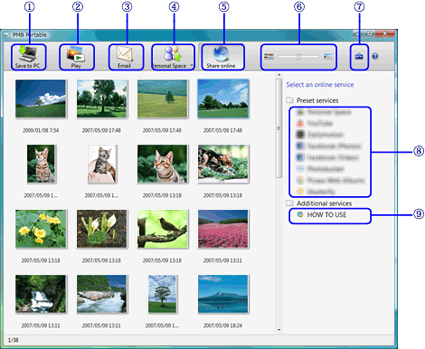
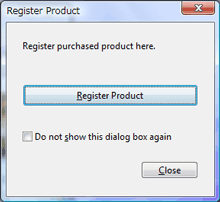

关于主窗口

当PMB Portable启动时，主窗口中会显示视频和照片的缩略图。

- （1）将视频和照片保存到计算机。
- （2）选择视频和照片后，单击此处显示预览。
- （3）附加并通过邮件发送选定视频和照片。
- （4）将选定视频或照片上传到Personal Space。您也可以在上传时向共享群组的成员发送电子邮件。
- （5）单击这里会显示要将视频和照片上传到的共享服务窗口。
- 上面的窗口是单击此处之后显示的示例画面。
- （6）滑动可更改缩略图的大小。
- （7）更改添加共享服务等设置。
- （8）连接到共享服务。
- 显示的共享服务取决于您所在的国家/地区。
- （9）将显示介绍共享服务使用方法的帮助窗口。
 提示
提示
- 当启动PMB Portable时，主窗口右侧会显示产品注册窗口。
 - 即使注册产品之后，每次启动PMB Portable时也会显示产品注册窗口。
- 选中［不再显示该对话框］复选框可以阻止显示该窗口。从下次启动 PMB Portable 起，将不再显示产品注册窗口。
- 您也可以单击主窗口中的
 ，然后在显示的［设置］窗口中注册产品。
，然后在显示的［设置］窗口中注册产品。
- 根据您所使用的相机型号，产品注册窗口可能不会显示。在此例中也一样，［设置］窗口中未显示［注册产品］。
|
Copyright 2011 Sony Corporation |